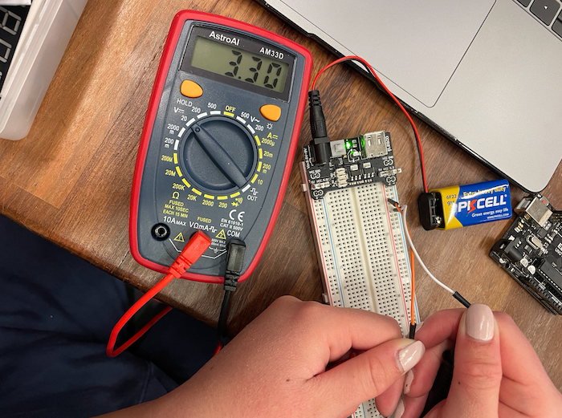
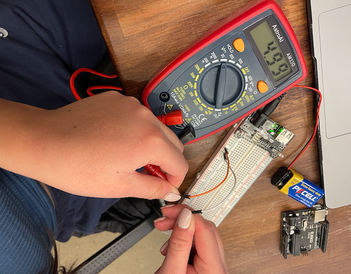
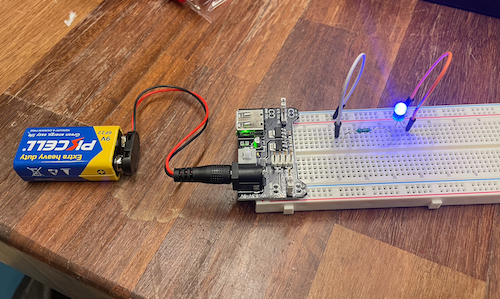
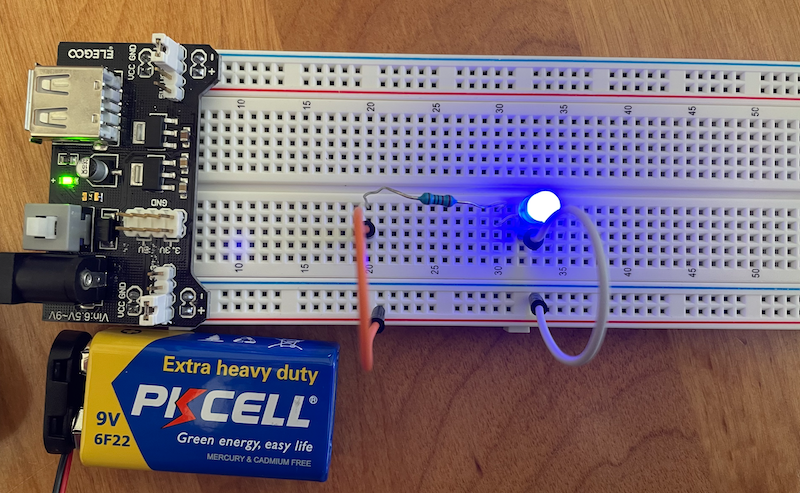
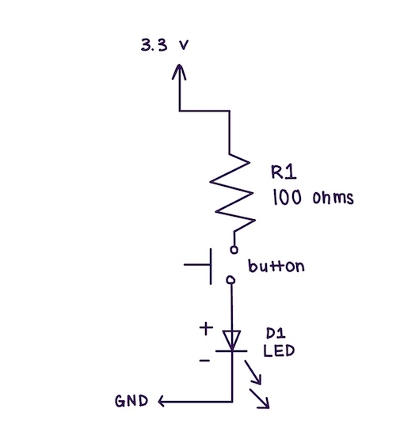
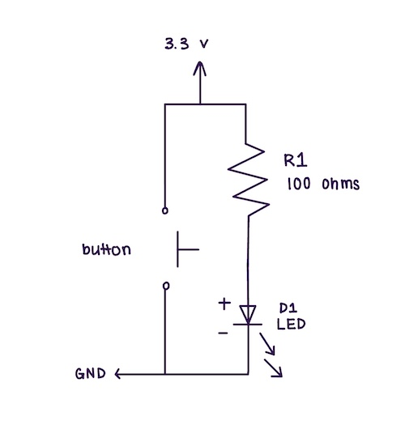
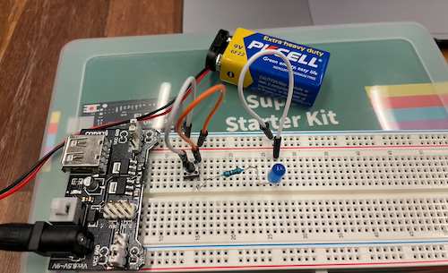

This lab was completed on January 31, 2023
The goal of this lab was to gain a basic understanding of simple circuits through the creation of different basic circuits on a breadboard.
The materials that I used for this lab are a power supply module, button, 830 tie-points breadboard, breadboard jumper wires, 9V battery with a snap on connector clip, resistors, LEDs, and a multimeter.
Part 1
The first part of the lab that I had to accomplish was to set up the power using my breadboard. In order to do this, I had to connect the power module into the breadboard. After, I connected my 9V battery to the breadboard, and turned on the power button on the module, making sure the green LED light turned on indicating that this was done correctly and power is being supplied to the breadboard.
After, I used my multimeter to test whether I was getting the expected power on the two sides of my breadboard. These readings are shown below.

Part 2
For the second part of the lab, I had to design a circuit with an LED and a 100 ohm resistor. The 100 ohm resistor was needed in order to not blow up the LED when it was connected to a 3.3V power supply.
Below is the schematic diagram and completed circuit to light up the LED connected to a 3.3V power supply.

If we were to connect the circuit to a 5V power supply, we would need to calculate the proper resistance needed to safely power the LED. Below you can find my calcalations and schematic for this type of circuit. I used ohms law to discover that the safest resistor to use was 220 ohms, because the target voltage that we wanted to make contact with the LED was somewhere between 20mA - 35mA.
Part 3
For the third part of the lab, I needed to incorporate the use of a button into the circuit so that when the button was pressed, the LED would turn on but otherwise the light remained off. This is because when the button is pressed, the circuit becomes closed, allowing electricity to flow through. When the button is released, the circuit breaks and then no electricity is flowing throught it anymore.
Click here to view a video of the part 3 circuit.
Part 4
For the extra credit component of this lab, we needed to be able to design a circuit that had an LED that would turn off when the button was pressed, but otherwise stayed lit. I knew that in order to create this circuit, I needed to have two paths, one with resistance and one without. Electricity always picks the path with the least resistance, and so I created a button that when pressed would create an alternative path without resistance. The electicity could only power the LED because that was the only path available when the button was not pressed, therefore lighting the LED until the button is pressed.
 